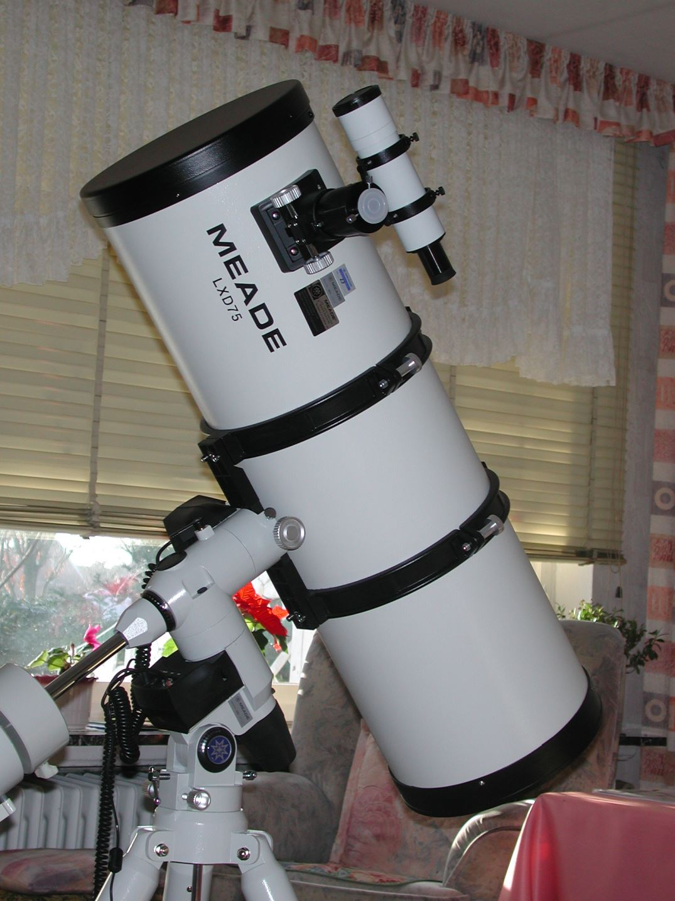
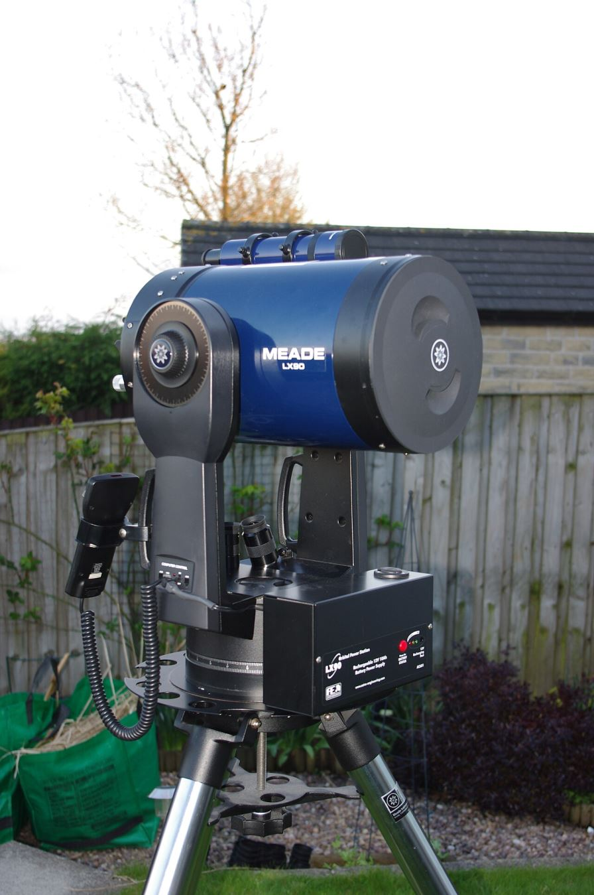

The Meade LXD75 is a telescope mount — the machine that holds the telescope and moves it. Its party trick is called GoTo: tell it what you want to see, and its motors point the telescope there by themselves. This page explains what the system actually is, what every specification means, and how to use it — from unboxing to your first object.
First: what is an equatorial mount?
Everything in this hobby starts with one fact: the sky appears to rotate because the Earth does. A telescope must compensate, or objects drift out of view in seconds.
A German equatorial mount solves this elegantly. It has two axes:
- The polar axis (RA) — tilted upward until it points at the celestial pole (roughly at Polaris). The tilt angle equals your latitude. This makes the axis parallel to Earth's own rotation axis. One motor turns this axis at exactly the sky's speed — and the telescope stays glued to its target forever.
- The declination axis (DEC) — perpendicular to the first, tilting the telescope north and south in the sky. It only moves when you aim at something new.
That's why an equatorial mount can track the sky with a single motor, while a simpler alt-azimuth mount needs two motors doing a coordinated dance.
And what is GoTo?
GoTo is computerised pointing. Once you tell the mount the date, the time and where on Earth it is, and then point it manually at two known stars, the mount knows exactly where it is pointing. From that moment, you can select any object from its built-in database — a galaxy, a nebula, a star — and the motors swing the telescope there automatically. Then the tracking motor takes over and keeps it centred while you look.
The brain is the Autostar #497 hand controller: a 2-line red-backlit LCD, 20-button keypad, and a database of 30,223 objects — planets, deep-sky objects, double stars, you name it. It even offers guided tours ("Tonight's Best"). The software lives in 1 MB of flash memory and can be updated from a computer (with an optional cable). Pointing precision is about 15 arc-minutes — close enough that the object lands in the eyepiece, then you centre it with the arrow keys.

The LXD75's story
Meade announced the LXD75 on 17 May 2004 and shipped it from late June that year. It replaced the LXD55 (2002) as Meade's affordable GoTo equatorial mount — the slot below the fancier LX90 and LX200, above the beginner ETX. The real upgrades over the LXD55: four stainless-steel ball bearings in both axes (the LXD55 used plain journal bearings), heavier castings, a redesigned drive with better motor-gear alignment to cut backlash, and a new all-metal tripod with a locking spreader bar. It was discontinued in 2008.
The technical specifications — translated
| Specification | Value | What it means |
|---|---|---|
| Mount type | German equatorial, Vixen Great Polaris-derived | One tilted axis tracks the sky; a classic, proven design |
| Worm gear | 72 mm diameter | The precision gear that turns the RA axis smoothly |
| Payload capacity | ~30 lb (13.6 kg) visual; ~20 lb recommended for imaging | How heavy a telescope it can carry — Meade never printed an official number |
| Mount + tripod weight | ~25 lb (11 kg) | The carrying weight of the mount itself |
| Tripod | All-metal tubular steel, adjustable 27–43 in | Height range; the spreader bar also holds three eyepieces |
| Polar alignment scope | Included, illuminated reticle | A small telescope built into the axis so you can aim it exactly at Polaris |
| Counterweights | 10 lb each (1–3 depending on package) | Sliding weights that balance the telescope tube |
| Tube attachment | Quick-release cradle rings (no dovetail bar) | The telescope sits in rings that slide into the mount |
| Motors | DC servo motors with optical encoders | The motors know how far they've turned — that's how GoTo aims |
| Slew speeds | 9 speeds: 0.004°/s (guide) up to 4.5°/s (max) | From hair-fine centring to fast slews across the sky |
| Tracking rates | Sidereal, lunar, + 2,000 custom rates | Follows stars at sky speed; the Moon at its own speed |
| PEC (Smart Drive) | 150 positions, ~12-minute cycle | Learns and cancels the worm gear's tiny periodic errors — for photography |
| Backlash compensation | RA + DEC percentage settings, trainable | Removes the play when motors reverse direction |
| Power | 8 × D cells (~40 h) or 12V DC external | Battery pack or mains adapter / car cord |
| Autoguider port | None | Guiding for photography needs the serial port instead — see below |
| Alignment modes | Easy (auto two-star), One-Star, Two-Star, Three-Star polar | Easy Align picks the stars for you — the beginner's friend |

The telescope packages
The LXD75 was sold mount-only or with six different telescopes. The key specs (from the Meade manual):
| Model | Aperture | Focal length | f-ratio | Tube weight | Total weight |
|---|---|---|---|---|---|
| SN-6 | 152 mm (6") | 762 mm | f/5 | 13 lb | 48 lb |
| SN-8 | 203 mm (8") | 812 mm | f/4 | 24 lb | 69 lb |
| SN-10 | 254 mm (10") | 1,016 mm | f/4 | 30 lb | 85 lb |
| AR-5 | 127 mm (5") | 1,180 mm | f/9.3 | 15 lb | 49 lb |
| AR-6 | 152 mm (6") | 1,200 mm | f/8 | 27 lb | 72 lb |
| SC-8 | 203 mm (8") | 2,000 mm | f/10 | 24 lb | 65 lb |
Quick translation: aperture is the diameter of the mirror or lens — bigger collects more light. Focal length is how much it magnifies per eyepiece. f-ratio is focal length divided by aperture — low numbers (f/4–f/5) give wide, bright views; high numbers (f/10) give high magnification, good for planets. The SN (Schmidt-Newtonian) models are the all-rounders; the SC-8 is the planet specialist.
How to use it — from box to first object
- Set up the tripod. Spread the legs, fit the spreader bar, roughly level. The leg under the fine-azimuth knobs faces north (south in the southern hemisphere).
- Set your latitude before anything is mounted: turn the push-pull T-handles until the latitude pointer reads your latitude (e.g. ~51° for Belgium).
- Mount the head. Lower it over the tripod shaft so the azimuth protrusion sits between the fine-azimuth knobs; tighten.
- Add counterweights. Screw in the shaft, slide the weights to mid-shaft, tighten — and always refit the safety cap (it stops the weights sliding off your toes).
- Fit the telescope. Slide the cradle into the mount slot, tighten both knobs, then put the tube in its rings.
- Balance it. Unlock RA, hold the counterweight shaft horizontal, and slide the weights until the tube stays put. Lock RA. Then unlock DEC and slide the tube in its rings until it balances. A balanced mount moves smoothly and its motors last.
- Polar-align. For looking: aim the RA axis at Polaris (by eye is fine to start). For the full version: switch on the polar scope's illuminated reticle, and put Polaris on the marked circle, 40–60 arc-minutes from the centre, at the correct clock position. For photography, finish with drift alignment.
- Power up. Eight D cells or a 12V adapter; handbox into the HBX port; switch on.
- Tell Autostar the basics. Date, time, your location (or nearest city), telescope model. Then set the polar home position: counterweight shaft down, tube level, pointing north.
- Easy Align. Choose "Easy" — the mount picks two bright stars by itself. It slews near each one; you centre it first in the finder, then in the eyepiece, and press ENTER. Two stars, done — the mount now knows the whole sky.
- GoTo. Object menu → Solar System, Deep Sky or Star → pick → ENTER. Watch the telescope find it. Tracking is automatic from then on.
- Focus and fine-tune. Focus with the drawtube knob; use speed keys 1–9 to switch between hair-fine centring and fast slews. If pointing drifts during a session, re-sync on a nearby bright star.
- Photography. For wide-field shots, piggyback a camera on the tube. For through-the-telescope shots, use a T-adapter and T-ring (on the SN models). Train PEC first, keep the payload light, and remember: there is no autoguider port — guiding is possible via the serial port, but it takes tinkering.
The honest weaknesses
- Backlash — play in the gears, especially DEC. Usually fixed by adjusting the worm mesh (and the mount's backlash settings); some units need it more than others.
- DEC-axis wobble — some owners report play even with the clutch locked.
- The RA transfer gear can slip if its set screw isn't flush on the shaft.
- The tripod is solid for the era, but marginal near the 30 lb limit.
- GoTo accuracy varies — 15 arc-minutes is the published figure; treat the final centring as your job.
- No autoguider port and plastic gears inside the motor gearbox — the gearbox can shed debris with age; the encoder discs are delicate.
- PEC corrects RA only — declination drift is yours to manage.
And the counterpoint: unit-to-unit quality varied — some owners report perfect backlash-free mounts that tracked a one-minute unguided exposure with no corrections. Buying one today means checking the specific unit.
Status today
Discontinued since 2008 — and the company behind it is gone: Meade went bankrupt in 2019, Orion acquired it in 2021, and operations ended in 2024. There is no factory support. The good news: the Autostar #497 was shared with many Meade models (LX90, ETX and more), so handboxes and cables still circulate; spare parts come from parted-out mounts and the aftermarket; and an active community converts LXD75s to OnStep — modern open-source control electronics. Used prices today are roughly $250–450 for the mount alone and $450–800 for a complete 8-inch SN package, depending on condition.
With an LXD75, the Space chapter becomes hands-on: everything these pages describe is up there, moving at sidereal rate. If you own one, photos of your setup are always welcome on this page.